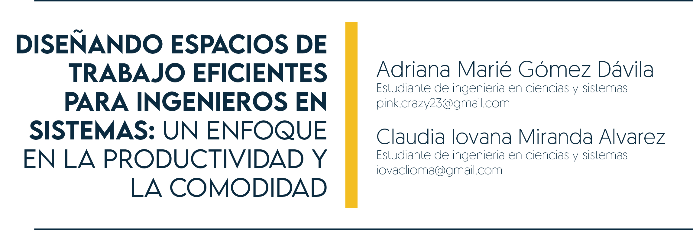

3 De la Educación Tradicional hacia la Educación Virtual

3.1 Resumen
Este texto aborda la transición de la educación presencial a la educación en línea en la Facultad de Ingeniería debido a la pandemia de COVID-19. La rápida migración generó desinformación y desorden, afectando el desarrollo de actividades académicas y profesionales. Se realizó una encuesta a estudiantes para evaluar los impactos de este cambio. El estudio destaca los desafíos enfrentados en la educación virtual y cómo los hábitos de estudio se han modificado en este contexto.
3.2 Abstract
This text addresses the transition from face-to-face to online education in the School of Engineering due to the COVID-19 pandemic. The rapid migration generated disinformation and disorder, affecting the development of academic and professional activities. A student survey was conducted to assess the impacts of this change. The study highlights the challenges faced in virtual education and how study habits have changed in this context.
3.3 Palabras Clave:
Transición, Educación en línea, Pandemia de COVID-19, Desinformación, Encuesta, Impactos
3.4 Introducción
El 16 de marzo de 2020 fue el último día en el cual los docentes y personal administrativo hicieron presencia de forma regular en los salones de clase e instalaciones de la Facultad de Ingeniería; misma situación vivió la población estudiantil, iniciando de esta forma el cierre de las instalaciones debido a la Pandemia de COVID-19; esta emergencia obligó a que se diera la migración a la modalidad en línea.
3.5 Artículo
El cambio radical que se produjo por esta rápida migración generó desinformación, desorden, desconocimiento y confusión a todos los integrantes del sistema educativo de la Facultad de Ingeniería,; situación que influyó de forma directa en el desarrollo de las actividades que se realizaban en la Unidad de Ejercicio Profesional Supervisado, formado por los programas de: Prácticas Iniciales, Intermedias, Finales y Ejercicio Profesional Supervisado, generando precedentes en la historia de la educación en el país con impactos que hoy en día (3 años más tarde) aún es difícil de cuantificar. Aunque esa confusión generada por la rápida migración dio lugar a la creación de estrategias para continuar con el proceso educativo y los cambios que implicaba en la vida universitaria, se generaron encuestas, estudios y otros tipos de análisis por parte de otras unidades universitarias, orientados a determinar los impactos generados durante esta transición.
La transición de una educación tradicional en la que se hacía presencia en los salones de clase, en la que los estudiantes presentaban documentos que incluían el desarrollo de ejercicios, investigaciones, trabajos en equipo y visitas a las industrias; existiendo la interacción física entre estudiantes y docentes, hacia actividades realizadas por videoconferencias, utilizando aplicaciones que han evolucionado en estos 3 años de educación virtual, cada día es un reto, e indico nuevamente es un reto porque los hábitos de estudio no son los mismos.
Se aplicó una encuesta a 75 estudiantes del curso de Prácticas Intermedias del 1er semestre de 2023 y al ser comparada con los resultados de la que se aplicó a igual número de estudiantes del curso de Prácticas Intermedias del 1er semestre de 2019, se obtuvo la siguiente información:
| Pregunta | 1er semestre 2019 | 1er semestre 2023 |
|---|---|---|
| 1. ¿Toma notas de los contenidos que imparte el docente durante el desarrollo de los talleres del curso? | ||
| Sí | 100 % | 10 % |
| No | 0 % | 90 % |
| ——————————————————————————————————- | ——————- | ——————- |
| 2. Para el desarrollo de los proyectos de clase, ¿qué documentos utiliza como bibliografía? | ||
| R1 Las notas tomadas de las clases impartidas por el docente y bibliografía incluida en el programa del curso | 95 % | 10 % |
| R2 Documentos publicados en páginas electrónicas de los temas relacionados con el proyecto a desarrollar | 5 % | 90 % |
| ——————————————————————————————————- | ——————- | ——————- |
| 3. ¿Cuánto tiempo adicional a los periodos de clase dedica a las prácticas intermedias? | ||
| R1. 3 a 5 horas a la semana | 75 % | 70 % |
| R2. 3 a 5 horas a la quincena | 22 % | 30 % |
| R3. 3 a 5 horas al mes | 3 % | |
| ——————————————————————————————————- | ——————- | ——————- |
| 4. ¿Tiene otro curso o laboratorio que se traslapa con el horario en el que se imparten las prácticas intermedias y procede a realizar una conexión simultánea en los salones de clase? | ||
| Sí | 0 % | 9 % |
| No | 100 % | 91 % |
| ——————————————————————————————————- | ——————- | ——————- |
| 5. ¡Trabaja actualmente? | ||
| Sí | 40 % | 10 % |
| No | 60 % | 90 % |
3.6 Conlusiones
La transición a la educación virtual posee sus debilidades y beneficios; es un proceso que requiere de actitud y responsabilidad de los participantes (estudiantes y docentes); debemos continuar buscando metodologías de aprendizaje y dinámicas que permitan aprovechar aún más los beneficios de la educación virtual, considerando que la transición a este tipo de educación no fue planificada, fue obligada ante la emergencia sanitaria suscitada, y la necesidad de continuar con la vida académica estudiantil.